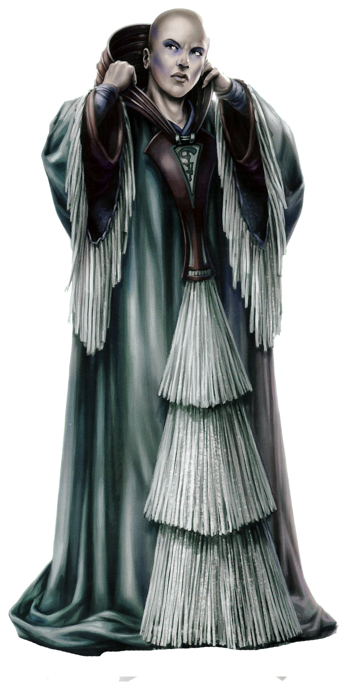

Umbaran
umbaran
Special Abilities: Umbarans begin the game with one rank in Deception. They still may not train Deception above rank 2 during character creation.
Entrancing Gaze: Umbarans add to Charm, Deception, and Negotiation checks.
Shadow Dweller: When making skill checks, Umbarans remove up to imposed due to darkness. Umbarans add to all checks they make while in bright natural light, such as direct sunlight.
The Umbaran people have had a contentious history with the Galactic Republic. Members of the Republic since its founding, they have a long tradition of participating in galactic politics. Never afraid to break away from the majority, however, they have always prioritized Umbara over the Republic. Umbarans’ political history has caused many other species to consider them mysterious, deceitful, conniving, and untrustworthy, and to call them “the Shadow People” behind their back. Some believe Umbarans have powers to control others’ minds, and beings of most species admit to feeling unsettled in their presence.
Umbarans are near-humans with pale skin that has a faint tint of blue or purple to it. They naturally have pale hair, but Umbaran custom is to shave the head bald. Their eyes tend to have white or pale irises, again with a faint tint of color, usually gray or blue. Umbarans can see into the ultraviolet end of the spectrum and have adapted to low-light conditions, yet they are not greatly uncomfortable in bright artificial light.
Prolonged exposure to sunlight, however, causes Umbarans to suffer irritability and short-term memory loss, similar to sleep deprivation in humans. Several hours in complete darkness usually resets their physiology. Bioluminescent lights do not affect Umbarans this way, and sunlight screened through transparisteel doesn’t affect them as harshly as raw sunlight.
The Umbaran caste system is often believed to be rigid and complicated by outsiders, but their society actually allows a remarkable amount of social mobility. Still, Umbarans can fall more easily than they can rise. This system has more than a hundred tiers and titles, and families can shift their social status with enough popular support, political maneuvering, wealth, influence, or even through marriage. Of course, more nefarious methods, such as blackmail, assassination, and bribery, have been known to occur. Some Umbaran sociologists and historians believe that this porousness in the social structure means that in a few hundred years, references to the caste system will disappear altogether. Although caste titles and names still appear in legal documents, no one truly follows or enforces them. However, an ambitious Umbaran might not be above using a caste title as an insult or in sycophantic praise.
This kind of culture might explain the Umbarans’ attitude toward galactic politics. A change in position isn’t a betrayal, but merely a decision to better one’s status. A fall in power isn’t a disaster, but a setback to recover from. And a political victory isn’t the time to celebrate, but rather serves as an incentive to keep pushing, for one never knows when one’s fortunes are about to turn.
Umbara lies in the Ghost Nebula of the Expansion Region. Shrouded in clouds and perpetual night, the planet’s surface receives no light from its sun, and the nebula’s gases and dust envelop the entire system.
Nevertheless, Umbara teems with countless types of flora and fauna—including plenty of the large and hostile variety. Quite a few of the world’s plants and animals possess a form of chemical luminescence, a common evolutionary adaptation to either attract the attention of prey or scare off predators. For some species, this luminescence produces enough light for a creature to see its surroundings.
Umbaran, also called Umbarese, is the spoken and written language of the Umbarans. In the written language, each number and letter is inscribed within a closed circle, and punctuation within half-circles. Most Umbarans also learn Basic as a matter of course.
In a remnant of the baroque caste system, various social groups give certain common words slightly different pronunciations. Even the written language has minor variations that add serifs or tiny line strokes, or rotate letters a few degrees. Offworlders generally don’t perceive these differences, but astute Umbarans and those obsessed with lineage can identify the speaker’s or writer’s caste relatively quickly.
Umbara has been a staunchly loyalist world from the beginning of the Clone Wars. Senator Mee Deechi aggressively advocated for increased military spending in the face of the Separatist threat, and is harshly critical of Senators in the pacifist faction, who seek a peaceful resolution to the conflict. According to him, a stance that supports any form of acquiescence to the Separatists’ demands is unpatriotic at best.
Umbara’s commitment to the Republic may stem from the similarities between the Umbaran culture of political subterfuge and unchecked ambition and what many others consider to be the worst aspects of corruption in the Republic. Umbara’s government has mastered the necessary bribery, blackmail, and other soft negotiation tactics that have become increasingly common in galactic politics. Umbara’s advanced technological base has given the world great influence in the Republic and fostered a strong economy.
Umbarans who travel offworld face some discrimination. The Umbaran reputation for deceit predisposes many beings toward having a negative view of them. Many species find the appearance and mannerisms of Umbarans to be somewhat sinister, further strengthening such sentiments. By and large, however, most Umbarans who travel off world are more than savvy enough to overcome such preconceptions and succeed in matters both business and political—even if that does require some liberties with the truth.
In a recent technological innovation, Umbaran soldiers on their homeworld wear suits filled with a pressurized green gas. Ship and tank pilots sit in cockpits filled with the same substance. This gas provides various breathable compounds that reduce panic and fear responses as well as improving cognitive focus. It increases Umbarans’ adrenaline while suppressing other symptoms of anxiety such as increased heart rate, rapid breathing, and jitteriness. The pressure both improves the gas exchange rate in the lungs and serves as a mild shock buffer to absorb impacts and kinetic projectiles. So far, field tests have proven the pressurized gas effective.